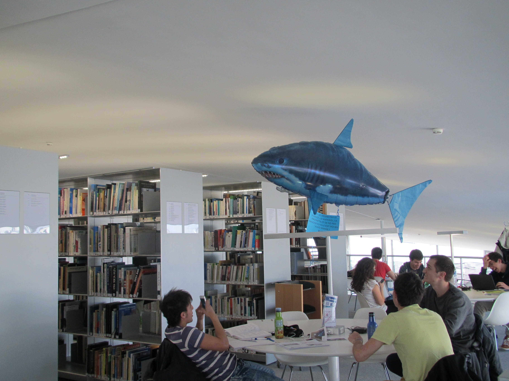

It may not be a shark in the flesh, but be prepared when you will encounter the shark of EPFL Library, located at the Rolex Learning Center in EPFL, Lausanne. Named Maurice Library Security
, the shark is an EPFL Library mascot and is used to swim
or fly in the Library among the students. Well, that sounds logical in a wave-shaped building, doesn’t it?
Maurice was born on April 1, 2014. His original mission was to make the students laugh for a day. In light of the success of this April Fool’s joke, it was decided to focus the Library’s next communication campaign around the shark. The message delivered during the exam period was very explicit: Beware! If you don’t respect Maurice’s rules of behavior, he will eat you! You’ve been warned!
.
As a librarian, it is sometimes unpleasant to remind library users of the rules of good conduct. It is especially true during the exam period. During these periods, which generally last two months a year, the spaces are saturated and students are stressed. This can lead to readers’ inappropriate behavior and tough situations for librarians to deal with. This is where Maurice comes in! From now on, it will no longer be the librarians who enforce discipline, but Maurice. And the message, based on humor rather than discipline, is getting through to the users a little better.
The library team carried out a photo session with Maurice and printed small posters that were placed each morning on the Library tables. The posters showed students doing anything and everything in the library, always with Maurice standing guard in the background. In the summer, the library team decided to make Maurice a real star by staging him in a series of short funny videos. Six months later, after a collaboration with the EPFL’s audiovisual department, the first videos were released on the Library YouTube channel1. Immediate success.
The years go by and, in addition to making appearances by flying in the library during each exam period, Maurice becomes a key figure in the library and on EPFL campus. Students parody Maurice’s posters, make caricatures of him, and the shark even gets his article in the EPFL magazine. Maurice takes part in Vivapoly 2017 edition (EPFL annual festival), where students can take selfies with the famous shark. Nearly 1,000 pictures were taken with Maurice during the evening. In 2018, Maurice is the subject of a photography contest on Instagram (the photos are visible there with the tag #EPFLmaurice). In 2018, Maurice pulls out all the stops during the summer exam period: a crime scene is set up in the middle of the library. The shark, furious that some students had reserved work seats, is said to have eaten one of them. All that remains is a blouse stained with (fake) blood, hair, a leg, and a few clues strewn on the floor in front of stunned students.
Six years after the first video from Maurice was posted on Youtube, there are more than 35,000 views on videos of the shark that has become a star on social media. But as always, fame brings its share of trouble. As Maurice popularity grows, students realize that Maurice – with its image more sympathetic than threatening – will never devour them, even if they don’t respect the rules of behavior. In other words, Maurice has more become a communication star of the library, than an efficient way to enforce the rules. But after all, isn’t that the whole point of having a shark in a library? Knowing that you are being watched, but not knowing what fate has in store for you.
Maurice videos on Youtube: https://www.youtube.com/watch?v=zuZhUiJfb20&list=PLPkfOHxsjx2j4WEugTP_Wo5Fj7rL7mC8P
To know more: Conference « La Bibliothèque communique avec ses amis » (french only), June 2, 2015, podcast available on https://www.youtube.com/watch?v=RR8IAkZRXeg
https://www.youtube.com/channel/UCOylyf3oGEBGF-0gWYsBWqQ↩︎
Frank Milfort is EPFL Library communication officer since 2017 and has adopted Maurice since the first day he met him.